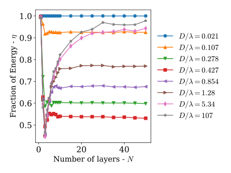
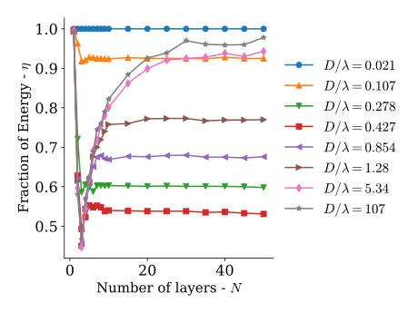

#SWDchallenge: Graph makeover
At storytelling with data, they run a monthly challenge on data visualization named #SWDchallenge. The main idea of the challenges is to test data visualization and storytelling skills.
Each month the challenge has a different topic. This month the challenge was to improve an existing graph. I decided to take a previous graph of mine that was published on a paper that was published on 2015.
The "original"
The following is the graph that we are going to start with.

This is not the exact same graph that was presented in the article on 2015, but it serves the purpose of the challenge. The data can be downloaded from here. This graph present the fraction of energy (\(\eta\)) transmitted for helical composites with different geometrical parameters. The parameters varied were:
Pitch angle \(\alpha\): the angle between consecutive layers;
Composite thickness \(D\), that is normalized to the wavelength \(\lambda\); and
Number of layers \(N\) in each cell of the composite.
The following schematic illustrate these parameters.

I would not say that the graph is awful, and, in comparison to what you would find in most scientific literature it is even good. But … in the land of the blind, the one-eyed is king. So, let's enumerate what are the sins of the plot and see if we can correct them:
It has two x axes.
The legend is enclosed in a box that seems unnecessary.
Right and top spines are not contributing to the plot.
Annotations are stealing protagonism from the data.
It looks clutterd with lines and markers.
It is a spaghetti graph.
The following snippet generates this graph.
import numpy as np from matplotlib import pyplot as plt from matplotlib import rcParams rcParams['font.family'] = 'serif' rcParams['font.size'] = 16 rcParams['legend.fontsize'] = 15 rcParams['mathtext.fontset'] = 'cm' markers = ['o', '^', 'v', 's', '<', '>', 'd', '*', 'x', 'D', '+', 'H'] data = np.loadtxt("Energy_vs_D.csv", skiprows=1, delimiter=",") labels = np.loadtxt("Energy_vs_D.csv", skiprows=0, delimiter=",", usecols=range(1, 9)) labels = labels[0, :] fig = plt.figure() ax = plt.subplot(111) for cont in range(8): plt.plot(data[:, 0], data[:, cont + 1], marker=markers[cont], label=r"$D/\lambda={:.3g}$".format(labels[cont])) # First x-axis xticks, xlabels = plt.xticks() plt.xlabel(r"Number of layers - $N$", size=15) plt.ylabel(r"Fraction of Energy - $\eta$", size=15) ax.legend(loc='center left', bbox_to_anchor=(1, 0.5)) # Second x-axis ax2 = ax.twiny() ax2.set_xticks(xticks[2:]) ax2.set_xticklabels(180./xticks[2:]) plt.xlabel(r"Angle - $\alpha\ (^\circ)$", size=15) plt.tight_layout() plt.savefig("energy_vs_D_orig.svg") plt.savefig("energy_vs_D_orig.png", dpi=300)
Corrections
I will vindicate the graph one sin at a time, let's see how it turns out.
It has two x axes
I, originally, added two axes to show both the number of layers and the angle between them at the same time. The general recommendation is to avoid this, so let's get rid of the top one.

Legend in a box
Pretty straightforward …
Right and top spines
Let's remove them
Annotations are stealing protagonism
Let's move all the annotations to the background by changing the color to a lighter gray.

Clutterd with lines and markers
Let's just keep the lines.

And increase the linewidth.

It is a spaghetti graph
I think that a good option for this graph would be to highlight one line at a time. Doing this, we end up with.

The following snippet generates this version.
import numpy as np from matplotlib import pyplot as plt from matplotlib import rcParams # Plots setup gray = '#757575' plt.rcParams["mathtext.fontset"] = "cm" plt.rcParams["text.color"] = gray plt.rcParams["xtick.color"] = gray plt.rcParams["ytick.color"] = gray plt.rcParams["axes.labelcolor"] = gray plt.rcParams["axes.edgecolor"] = gray plt.rcParams["axes.spines.right"] = False plt.rcParams["axes.spines.top"] = False rcParams['font.family'] = 'serif' rcParams['mathtext.fontset'] = 'cm' def line_plots(data, highlight_line, title): plt.title(title) for cont, datum in enumerate(data[:, 1:].T): if cont == highlight_line: plt.plot(data[:, 0], datum, zorder=3, color="#984ea3", linewidth=2) else: plt.plot(data[:, 0], datum, zorder=2, color=gray, linewidth=1, alpha=0.5) data = np.loadtxt("Energy_vs_D.csv", skiprows=1, delimiter=",") labels = np.loadtxt("Energy_vs_D.csv", skiprows=0, delimiter=",", usecols=range(1, 9)) labels = labels[0, :] plt.close("all") plt.figure(figsize=(8, 4)) for cont in range(8): ax = plt.subplot(2, 4, cont + 1) title = r"$D/\lambda={:.3g}$".format(labels[cont]) line_plots(data, cont, title) plt.ylim(0.4, 1.0) if cont < 4: plt.xlabel("") ax.xaxis.set_ticks([]) ax.spines["bottom"].set_color("none") else: plt.xlabel(r"Number of layers - $N$") if cont % 4 > 0: ax.yaxis.set_ticks([]) ax.spines["left"].set_color("none") else: plt.ylabel(r"Fraction of Energy - $\eta$") plt.tight_layout() plt.savefig("energy_vs_D_7.svg") plt.savefig("energy_vs_D_7.png", dpi=300)
Final tweaks
Using Inkscape I added some final details to get the following version.

Further reading
Knaflic, Cole Nussbaumer. Storytelling with data: A data visualization guide for business professionals. John Wiley & Sons, 2015.
Nicolás Guarín-Zapata et al. "Shear wave filtering in naturally-occurring Bouligand structures." Acta biomaterialia 23 (2015): 11-20. Preprint: https://arxiv.org/pdf/1505.04203.pdf
Comments
Comments powered by Disqus